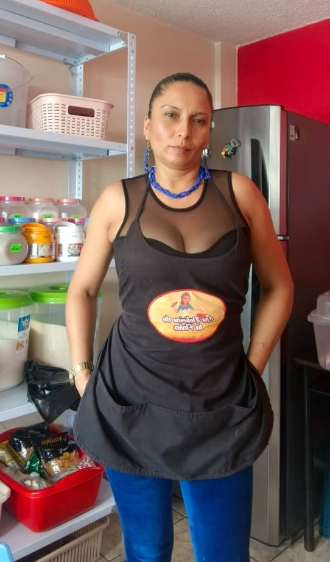

Propietario: Gladys Patricia Rivera Vaca
Ubicación: Conocoto Quito, Ecuador
Horario: Lunes a Sabado, 18:00 - 22:00
WhatsApp: 0991393029
Contactar por WhatsApp"El auténtico sabor tradicional hecho con ingredientes frescos y de primera calidad. En Las Delicias de la Flaka creemos que comer rico es para todos, por eso creamos platillos deliciosos y balanceados, con opciones saludables libres de azúcar. ¡Te cuidamos con cada receta!"